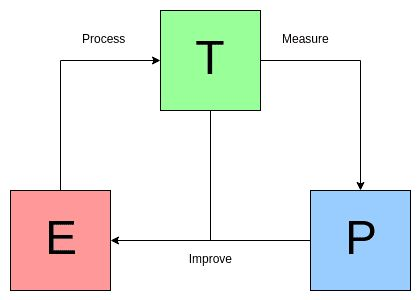
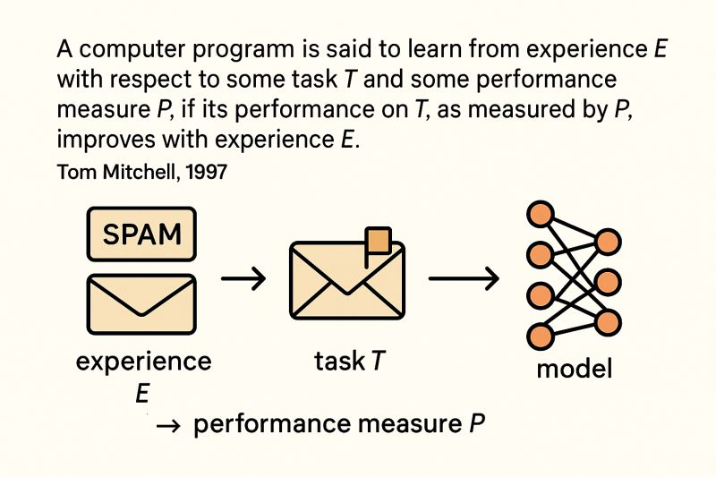
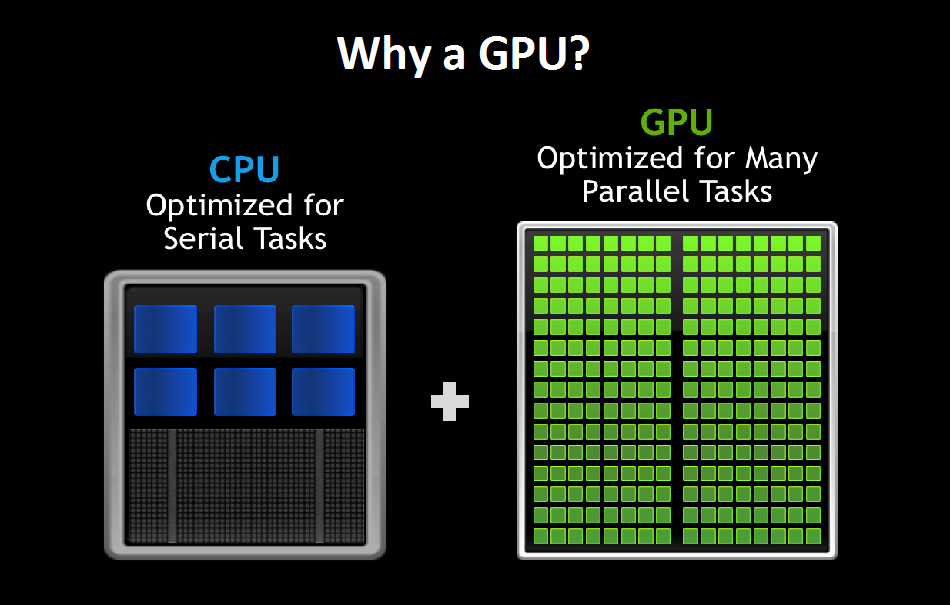
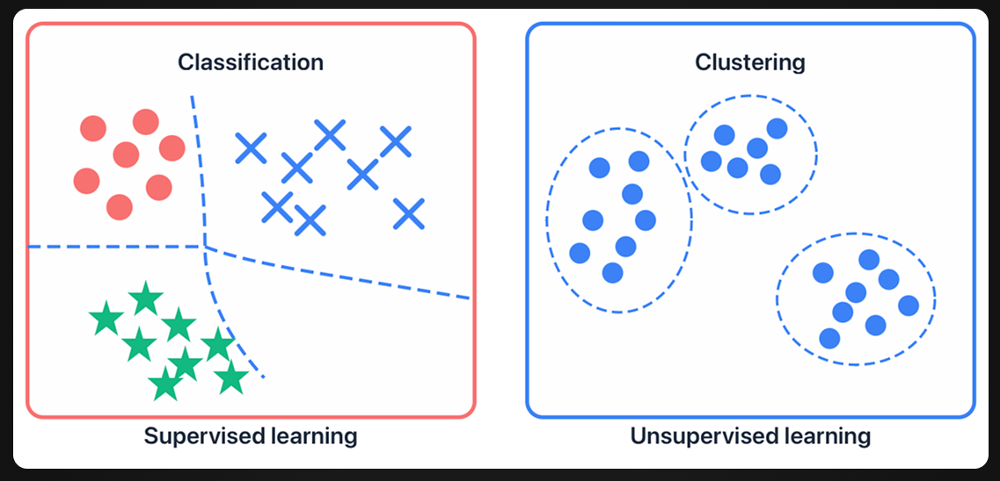
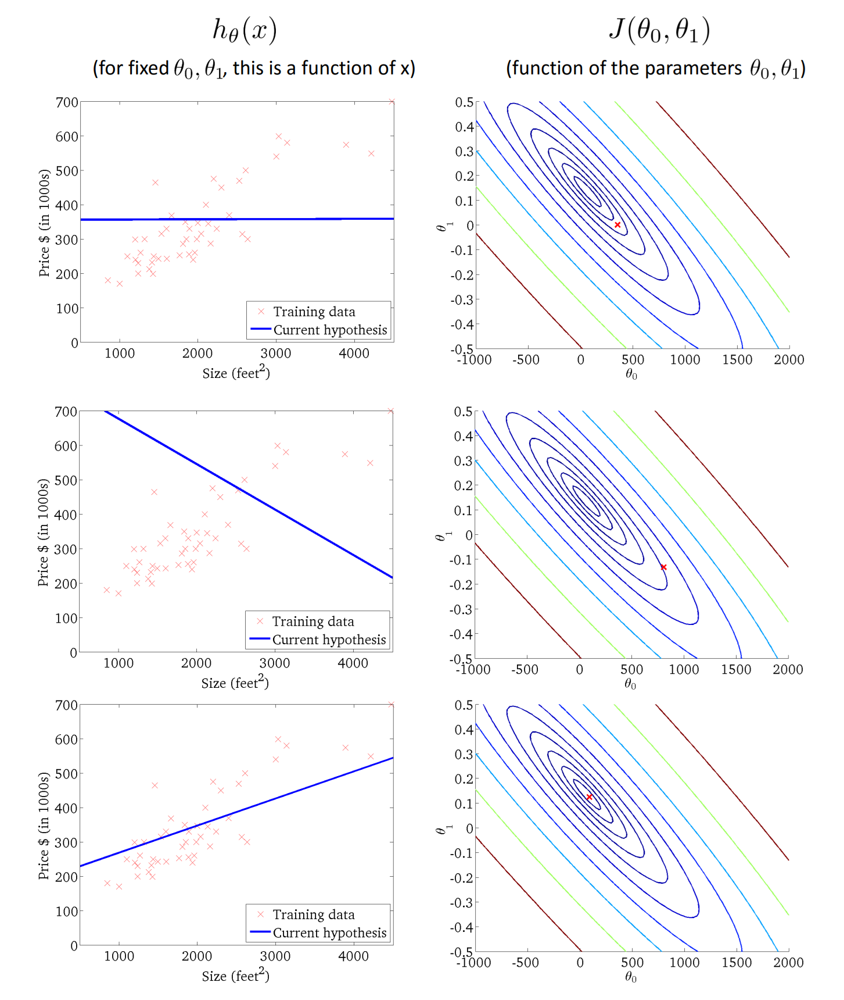
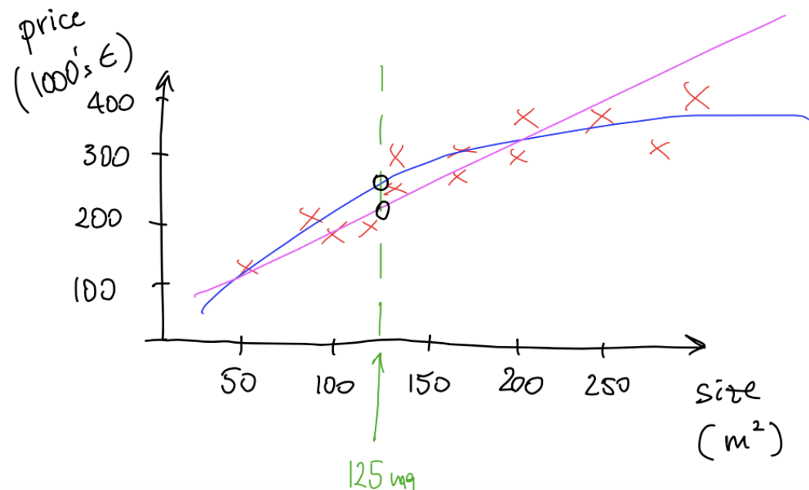
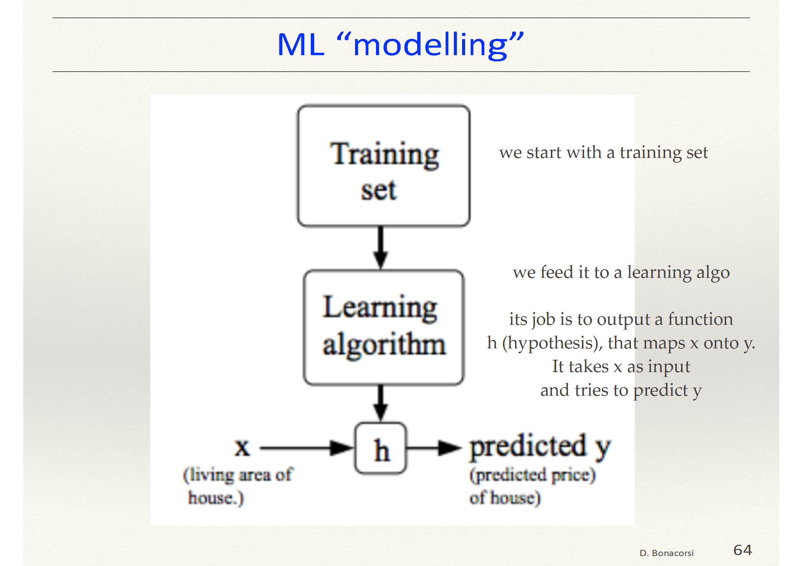
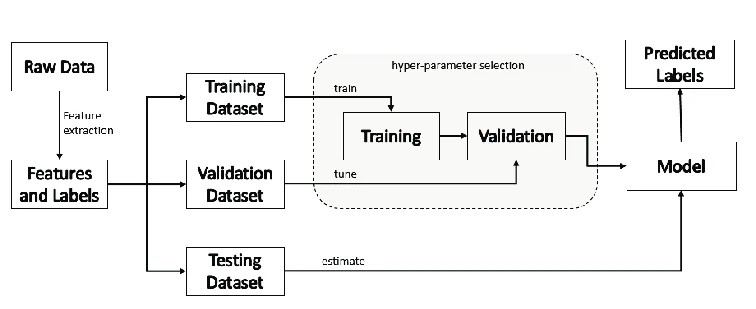

Big Picture
Machine Learning is introduced here not as abstract theory, but as a practical tool for solving real-world problems. The lecture frames ML as a way to build systems that improve from data, while the course itself is centered on intuition, methodology, and application.
The lecture sets the tone for the rest of the module: first build a clear conceptual map, then use that map to reason about methods, data, and decisions.
Course Approach and Expectations
- Applied and intuition-driven
- Focused on understanding real use cases
- Light on formal proofs
- Designed to build usable methodology
- Slides are shared for study
- Hands-on material supports the lectures
- Students can experiment with code and notebooks
- The emphasis is on reasoning, not rote repetition
The professor makes it clear that the course is meant to help students become better at approaching machine learning problems in practice, including how to think about data, model choices, and methodology.
What This Course Is (and Is Not)
This course IS
- Applied and intuition-driven
- Focused on real-world problem solving
- Built around methodology and reasoning
- A foundation for more advanced ML topics
This course is NOT
- A pure theory course
- A formal proof-based course
- A Python tutorial from zero
- Just a collection of definitions to memorize
Basic programming familiarity is helpful, but the lecture does not treat programming itself as the learning objective. The real goal is understanding how machine learning systems are framed, trained, and evaluated in practical settings.
Core Definitions of Machine Learning
| Author | Definition | Main Idea |
|---|---|---|
| Arthur Samuel (1959) | The field of study that gives computers the ability to learn without being explicitly programmed. | Learning replaces hand-written rules |
| Tom Mitchell (1997) | A program learns from experience E with respect to task T and performance measure P if its performance improves with experience. | Learning is framed through task, experience, and measurable improvement |
These definitions can be unified into a modern view: machine learning systems improve their performance on a specific task by learning patterns from data rather than depending only on fixed logic.
AI, ML, and Deep Learning
The lecture emphasizes that, in practice, “AI” should not be interpreted as human-like general intelligence. Instead, it usually refers to the automation of specific tasks, often called narrow AI.
Mitchell’s T / E / P Framework
Tom Mitchell’s formulation is especially useful because it gives a clean way to describe almost any machine learning problem.
What the system is supposed to do.
What the system learns from over time.
How success is measured objectively.
| Application | Task (T) | Experience (E) | Performance (P) |
|---|---|---|---|
| Checkers Program | Play checkers | Games played against itself | Probability of winning |
| Spam Filter | Classify emails as spam / not spam | User-labeled messages | Fraction of correctly classified emails |


This framework matters because it forces you to define what counts as learning. A system is not “intelligent” just because it produces output; it must improve on a task through experience according to a measurable criterion.
Why Now?
Large, rich, and diverse datasets make learning methods far more useful and effective.
GPUs and other accelerators make demanding learning workloads computationally feasible.
Teams can use large-scale infrastructure without owning physical data centers.
- Volume: massive quantities of data
- Variety: many forms such as text, images, and signals
- Velocity: rapid generation and flow of data
- Veracity: uncertainty, noise, and inconsistency in real data

The lecture’s message is that modern ML did not appear “all at once.” It became practical because data grew, computation improved, and access to computing infrastructure became easier.
Types of Machine Learning
Supervised Learning
Learn from examples where the correct output is already known.
- Regression → predict continuous values
- Classification → predict discrete labels
Unsupervised Learning
Learn from unlabeled data and discover useful structure.
- Find clusters or patterns
- Detect hidden relationships
- Organize data without given answers
The system improves behavior by receiving rewards or penalties over repeated interaction.

Math Preview: Univariate Linear Regression
One of the simplest machine learning models is univariate linear regression, where a single input feature is used to predict a continuous output.
Dataset Notation
| Symbol | Meaning |
|---|---|
| $$m$$ | Number of training examples |
| $$x$$ | Input feature (independent variable) |
| $$y$$ | Target value (output) |
| $$[x^{(i)}, y^{(i)}]$$ | The i-th training example |
Model (Hypothesis)
This equation represents a straight line. The goal is to choose parameters θ₀ (intercept) and θ₁ (slope) so that the line best fits the data.
Parameters
| Parameter | Role |
|---|---|
| $$\theta_0$$ | Intercept (where the line crosses the y-axis) |
| $$\theta_1$$ | Slope (how much y changes when x increases) |
Cost Function
The cost function measures how far predictions are from the true values. It computes the average squared error across all training examples.

This introduces a key pattern in machine learning: define a model, define a way to measure error, and then optimize the model to reduce that error.
Examples
Predicting a house price is a regression task because the output is a continuous numeric value.
Predicting whether a tumor is benign or malignant is classification because the output is a discrete label.
Grouping similar customers without predefined labels is an example of discovering structure in unlabeled data.

These examples matter because they show that choosing the right learning setup depends first on the kind of target you have: continuous, categorical, or completely unlabeled.
Key Visuals


Study Material
The official slide deck contains the core definitions, diagrams, and examples discussed during the lecture.
View PDF →The transcript captures the lecturer’s explanations, intuition, and practical interpretation of the material.
View PDF →Use the slides for structure and visuals, and the transcript for deeper understanding and context. Together they provide a complete view of the lecture.
Quick Review Quiz
1. How does Arthur Samuel define Machine Learning?
He describes it as the field of study that gives computers the ability to learn without being explicitly programmed.
2. What are T, E, and P in Mitchell’s framework?
T is the task, E is the experience, and P is the performance measure.
3. What is the task in the spam filter example?
The task is classifying emails as spam or not spam.
4. What counts as experience in the spam filter example?
The system learns from how users label or identify emails over time.
5. How are AI, ML, and Deep Learning related?
Machine Learning is a subset of AI, and Deep Learning is a subset of Machine Learning.
6. What practical meaning of AI does this lecture emphasize?
AI is presented mainly as automation of specific tasks and decision support, rather than as general human-like intelligence.
7. Why has ML grown so quickly in recent years?
Because of large-scale data, better hardware such as GPUs, and easier access to computing through the cloud.
8. What is the difference between supervised and unsupervised learning?
Supervised learning uses labeled examples with known answers, while unsupervised learning finds patterns in unlabeled data.
9. House-price prediction: which type of machine learning problem is it, and why?
It is a regression problem because the output is a continuous numerical value (the predicted price).
10. Tumor diagnosis: which type of machine learning problem is it, and why?
It is a classification problem because the output belongs to discrete categories such as benign or malignant.
11. What do the symbols θ₀ and θ₁ represent in hθ(x) = θ₀ + θ₁x?
They are model parameters: θ₀ is the intercept term and θ₁ controls the slope of the line.
12. Why does this course focus so much on methodology?
Because good machine learning depends not only on results, but on choosing the right framing, understanding the data, and interpreting model behavior correctly.